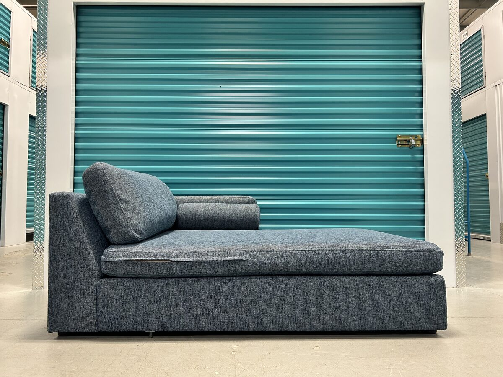
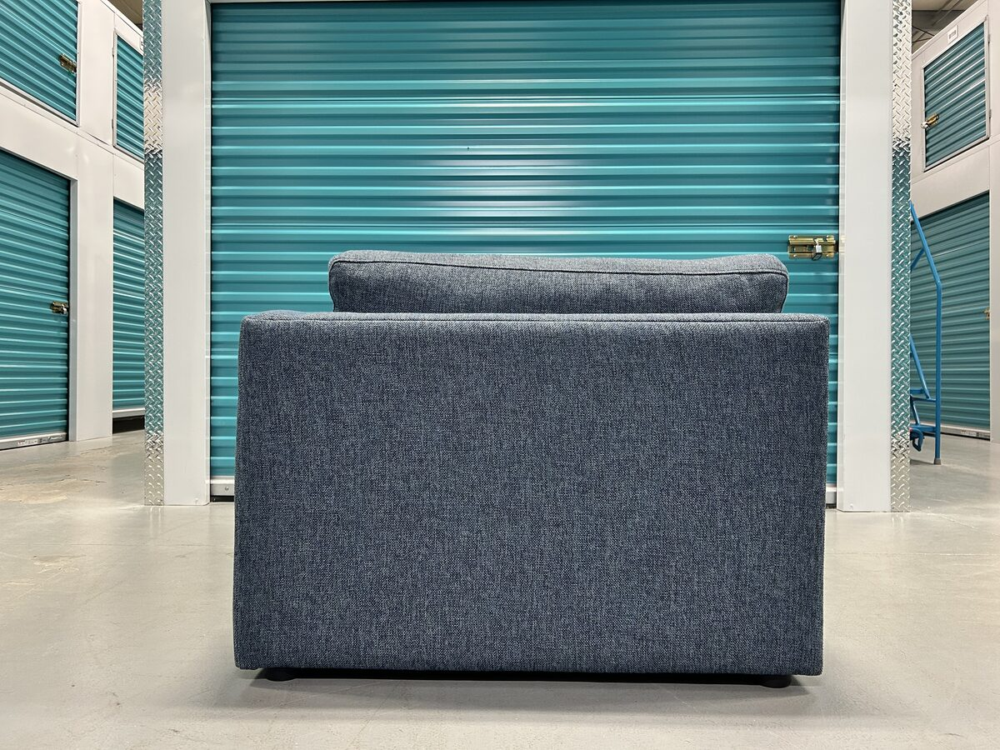
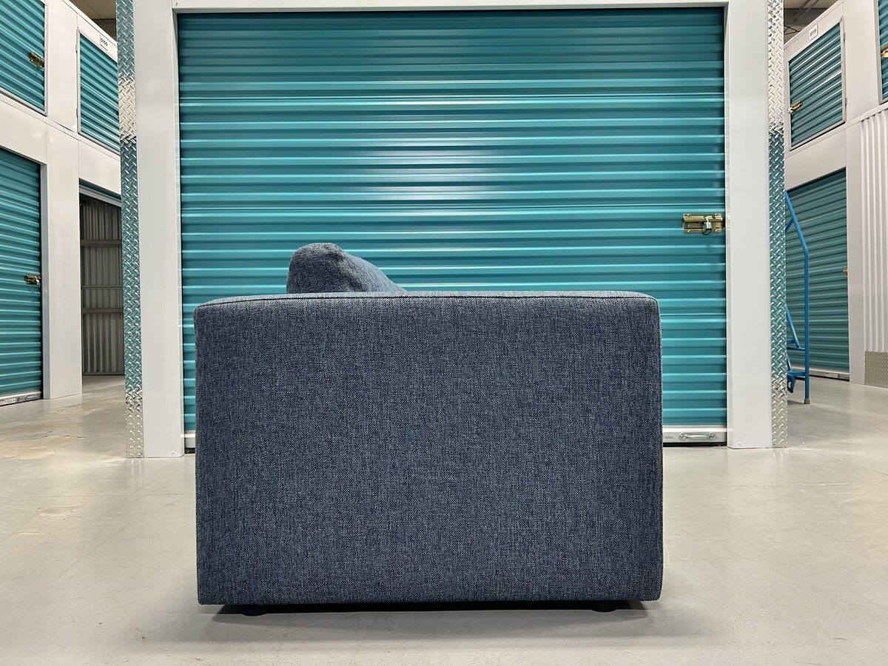
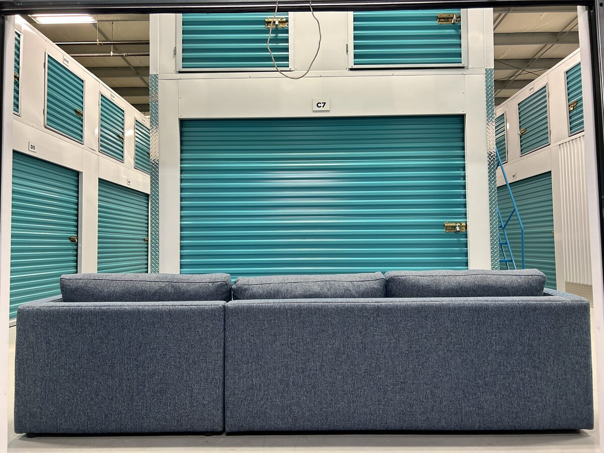
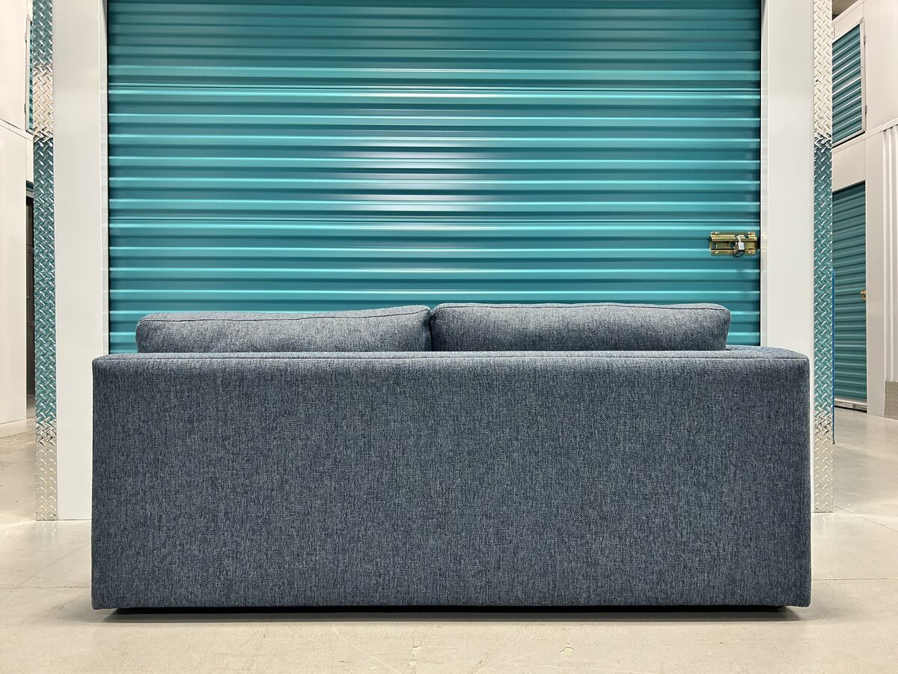
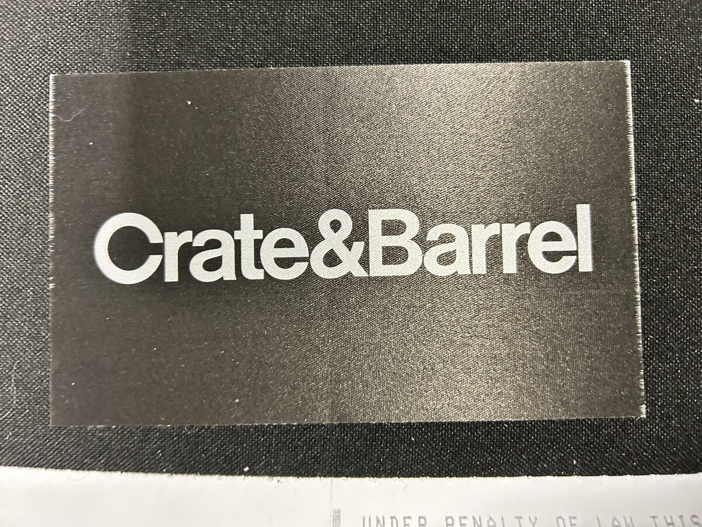

Aris 2-Piece Bench Sectional with Right-Arm Chaise — Thrive Ink
Description
The Aris is a Crate & Barrel exclusive, and it is the piece the brand builds when the brief is modern lines without a hard seat. Clean-lined track arms and broad decks keep the profile tailored and architectural, while the bench seats and deep back cushions do the opposite of what a low, squared-off sectional usually does — they invite you to sink in. Two bolster pillows come with it to fine-tune the lean. This is the two-piece configuration: a left-arm sofa and a right-arm chaise, so the chaise sits on the right as you face the piece. At 109 inches across with the chaise running 69 inches deep, it is a room-defining L rather than an apartment sectional — it wants a living room it can anchor. The bench seat on each module is a single uninterrupted cushion, so there is no centre gap down the seating surface. The upholstery is Thrive in the Ink colourway — one of Crate & Barrel's performance fabrics, and a textured basketweave rather than a flat weave. A heathered warp combined with a bouclé yarn gives it real tonal variation up close: it reads as a deep heathered denim-slate that shifts with the light. The blend is 97% olefin and 3% polyester woven in the United States, which is the practical part — olefin is solution-dyed and resists staining and fading, so it holds up to pets, kids, and daily use, and it is GREENGUARD Gold Certified for low chemical emissions. Underneath is a hardwood frame carrying FSC certification, meaning the wood is traceable to forests certified as responsibly managed. The seat cushions are a polyfoam core wrapped in a feather-down blend — the combination that gives the Aris its support-plus-softness — and the back cushions are a polyfiber blend encased in polyester sheeting so they hold their shape rather than flattening. It is made in the USA of domestic and imported materials.
Features
- Hardwood frame, FSC® Certified — wood sourced from forests certified as responsibly managed
- Polyfoam core seat cushions wrapped in a feather-down blend
- Back cushions of polyfiber blend encased in polyester sheeting
- Thrive performance fabric in Ink — 97% olefin, 3% polyester textured basketweave, woven in the United States
- GREENGUARD Gold Certified for low chemical emissions; easy-clean and pet-friendly
- Two bolster pillows included
- Right-arm chaise, left-arm sofa — chaise on the right as you face the piece
- Made in USA of domestic and imported materials
- Overall height 31.25 in at the frame; 32.5 in measured over the back cushion
- Sofa module 37.5 in deep — the 109 × 69 in footprint is measured across the chaise
Condition
Includes
All designer pieces are inspected for construction, materials, and manufacturer consistency before listing.
Have one like this? We’d buy yours back — sell your Crate & Barrel piece →
← All Available PiecesRequest a Viewing
Leave your name and the best way to reach you and we’ll get back to you to set up a time to see the Crate & Barrel. Phone or email — whichever you prefer.
Got it — we’ll be in touch shortly to set up a time. Thanks!
Frequently Asked Questions
Is this an authentic Crate & Barrel Aris sectional?
Yes. The original woven Crate & Barrel label is still attached to the frame — it is the last photo in the listing, shown alongside the factory law tag. The Aris two-piece sectional is also a Crate & Barrel exclusive, meaning it is not sold through any other retailer. Every designer piece we list is inspected for construction, materials, and manufacturer consistency before going up.
Which side is the chaise on?
The right, as you face the piece. The configuration is a right-arm chaise paired with a left-arm sofa, so it forms a right-facing L. The two modules are handed and cannot be swapped to put the chaise on the left.
What is the Thrive Ink fabric like?
Thrive is one of Crate & Barrel's performance fabrics — a textured basketweave where a heathered warp and a bouclé yarn create noticeable tone variation up close. Ink is a deep heathered blue-slate. The blend is 97% olefin and 3% polyester woven in the United States; olefin is solution-dyed, so it resists staining and fading and cleans easily, which is why it is rated for active, pet-friendly households. It is also GREENGUARD Gold Certified for low chemical emissions.
What are the exact dimensions?
The sectional is 109 inches wide and 31.25 inches high at the frame, or 32.5 inches measured over the back cushion. The 69-inch overall depth is measured across the chaise; the sofa module is 37.5 inches deep, so only the chaise end carries that deep footprint. Measure your doorways and any turns before delivery day: the piece comes apart into two modules, which makes it far easier to move than the overall dimensions suggest.
How old is it?
It was manufactured in March 2023, so it is a current-generation Aris rather than an older discontinued version. It has been in a single home since and is in excellent condition.
Do you deliver?
Yes. We deliver throughout Edmonton and surrounding areas, and we arrange delivery across Alberta on request. Delivery is offered for an additional fee that depends on distance and access.